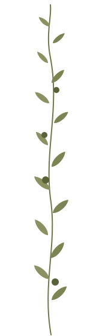
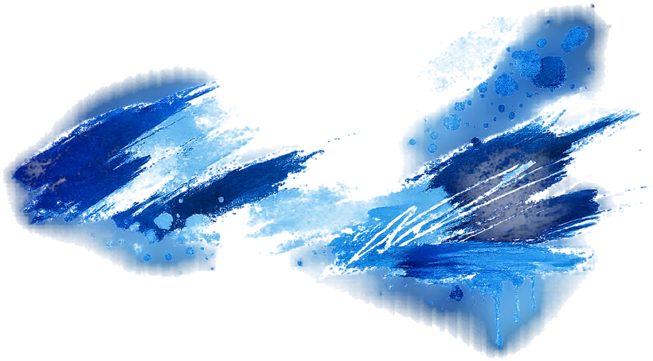
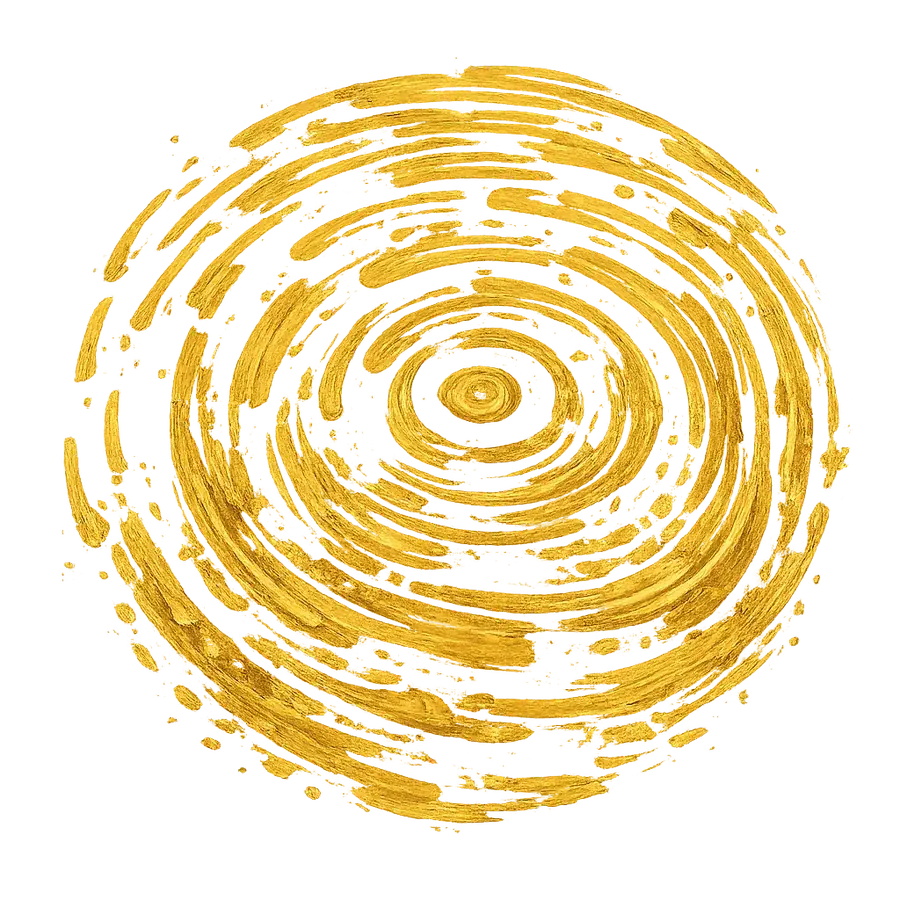

01
Pomodoro Room
Warm, vibrant and welcoming: shades of red, hand-painted furniture and contemporary artworks create a space full of energy and personality.
Discover →

Mantua · Since 1498
About us
On the doorstep of Mantua, next to the historic Bosco della Fontana and nestled in the Mincio Park, Beatilla is a place where art, nature and eco-design come together.
More than a farm stay, it is a place for those who wish to slow down, breathe and experience the countryside authentically.
Every room springs from the meeting of natural materials, creative upcycling, colour and handmade detail. A project conceived by international artist and eco-designer Luca Bornoffi, who, after working with luxury hotels around the world, brought his concept of hospitality here, rediscovering the «homemade» style — one of the most eco-sustainable holiday farms in the area.
Beatilla offers apartments and rooms surrounded by greenery, designed for couples, families and travellers in search of peace. Minutes from Mantua and connected to the Mantua–Peschiera cycle path, our farmhouse is the ideal starting point for exploring the area — or simply taking a break.

Our motto
«Mi casa es tu casa»
A meeting of colours where art, nature, eco-design, upcycling and hospitality write our story. Our mission is to make you feel at home and give you a smile.
Stay
Warm, vibrant and welcoming: shades of red, hand-painted furniture and contemporary artworks create a space full of energy and personality.
Discover →
Light, simplicity and harmony: a bright space where design meets the quiet of the countryside, with exposed beams, handcrafted details and citrus-inspired colours.
Discover →
More room to feel at home: an independent apartment with living room, kitchen and bedroom, where art and design accompany every moment of your stay.
Discover →
Beatilla's most contemporary face: bold colours, bright rooms and works by Luca Bornoffi make this apartment a true art and eco-design experience.
Discover →
The most authentic soul of the farmhouse: stone, wood and beamed ceilings tell of rural tradition, reinterpreted through Beatilla's artistic style.
Discover →Fragments


To experience


Comfort & hospitality
Everything that makes a stay simple and serene: breakfast waiting at your door, a walk in nature or a bike ride — we think of every detail so you can feel at home.
A basket of homemade produce, carefully prepared, waiting at your door at the time you choose.
A coffee machine in your room for a fragrant break at any time of day.
Solutions for 2-4 guests with fitted kitchens, ideal for families and longer stays.
Ride along the Mantua-Peschiera cycle path, just 15 minutes from the Mincio Park.
In the rooms and at reception you will find a choice of drinks for a snack or an aperitivo in the garden.
A wide green space to relax, play with the family and enjoy nature.
Free outdoor parking on the premises. Covered parking available on request for a fee.
Fast, free connection throughout the property, to stay in touch or work on holiday.
Cradles and cots available on request, for the little ones' peaceful sleep.
An intimate space to read, unwind and be inspired by the art around you.
Boat trips along the Mincio to discover the area's nature and waterside villages.
Minutes away, one of Italy's most beautiful cycling routes, following the river to Lake Garda.
Italy's largest lake just 30 minutes away: beaches, villages and unforgettable views.
Walks along the trails of the Bosco della Fontana, in the heart of one of the area's most evocative nature reserves.
Discover farm life among vegetable gardens, animals and the authentic rhythms of the countryside.
Horseback rides organised with a nearby riding stable.
We help you discover the area, recommending restaurants, places to visit and experiences not to miss.
Sessions in the green to restore balance and harmony, immersed in the quiet of nature. On request.
Art experience

After discovering the artistic journey of international artist Luca Bornoffi and the philosophy behind his series Circles of Life, you will enjoy an immersive experience of canvases, colours and materials, creating a unique artwork to take home with you.
The workshop is open to everyone, even complete beginners. More than learning a technique, you will enjoy the pleasure of free expression in a place where art and nature talk to each other every day.
All materials are included. Available on reservation.
Book your experience →For more information, contact us: info@agriturismobeatilla.it



More than an artist residency. A place to create, share and belong.
Beatilla Art Residency was created to offer artists and creative professionals the time, space and peace needed to develop their artistic research. Immersed in the Mantuan countryside, it is a place where art, nature and eco-design live side by side, turning everyday life into a source of inspiration.
We welcome artists of every discipline, encouraging both individual work and cultural exchange through shared experiences, hospitality and rural life.
For applications and information: info@agriturismobeatilla.it
The artist
«We often forget where colours come from.»
Luca Bornoffi (Mantua, 1980) is a contemporary artist whose research springs from a deep bond with nature. Raised in the countryside among horses and rural landscapes, he developed a particular sensitivity to colour as a source of harmony, energy and well-being.
His artistic practice takes shape in the series Circles of Life: abstract compositions of circles, transparencies and colours evoking connections, encounters and the imperfect rhythm of life. For Bornoffi, colour is not merely visual — it is a language capable of transforming how we perceive spaces and emotions.
After travelling to more than 60 countries, he created Beatilla Holiday Farm Eco Design, a place entirely decorated with his works and furnished with upcycled furniture. His works belong to collections and exhibitions worldwide and are featured on Artsy, Artnet and Artsper.


Guests
The area
Mantua, a UNESCO World Heritage city and Italian Capital of Culture 2016, is one of Italy's most beautiful cities: palaces, museums, churches and squares tell centuries of Gonzaga art and history. Don't miss the famous pumpkin tortelli and the historic sbrisolona cake, true icons of Mantuan gastronomy.

The Ducal Palace with Mantegna's Camera degli Sposi, Palazzo Te, Piazza delle Erbe, the Rotonda di San Lorenzo and the Basilica of Sant'Andrea: an open-air museum.

The largest forest of the Po Valley, with a sixteenth-century castle once the Gonzagas' hunting reserve. You can walk there directly from the farm.

Also reachable by bike from Beatilla. One of Italy's most beautiful villages, with watermills, historic lanes and views over the Mincio river.

The city of Romeo and Juliet, a UNESCO site, with the Arena, elegant squares and a charming historic centre.

Also reachable by bike from Beatilla. A UNESCO-listed fortified town where canals, Venetian ramparts and Lake Garda meet.

The pearl of Lake Garda, with the Scaliger Castle, the Grottoes of Catullus and its renowned thermal baths.
Minutes away you will also find the Morainic Hills with their vineyards, the Sigurtà Garden Park — one of Europe's most beautiful gardens — and Gardaland for the little ones.
Contacts
How to reach us
From the A22 motorway (Modena–Brenner)
Exit at Mantova Nord and follow signs for Brescia. After about 8 km, at the roundabout continue towards Brescia; after 500 m turn left towards Bosco Fontana and take the first right after 200 m.
From Mantua
Head towards Brescia. In Cittadella turn left for Brescia – Lake Garda; after about 3 km, at the roundabout go straight on towards Brescia. After 500 m turn left towards Bosco Fontana, then take the first right after 200 m.
From Brescia
Take the SS Goitese towards Mantua: after Montichiari, Castiglione delle Stiviere and Goito, pass Marmirolo. After about 3 km turn right towards Bosco Fontana and take the first right after 200 m.
Tip: set your sat nav to “Corte Barco”.
Frequently asked questions
Check-in is from 3:00 pm and check-out is by 10:00 am. To guarantee a room prepared with the utmost care, we kindly ask you to respect the arrival time.
Yes. Every morning we will bring you our Breakfast Basket, a basket of fresh homemade produce delivered straight to your room at the time you choose, between 7:30 and 9:45 am.
Yes. Free outdoor parking is available on the premises. Covered parking is also available on request for a fee.
Yes. The restaurant is happy to welcome outside guests as well, by reservation. To book: +39 339 222 6468
Absolutely. We have cots for the little ones, wide open spaces and a large garden for relaxing family time.
No, at the moment we are unable to accommodate pets.
Yes. Bikes are available on reservation — perfect for exploring the Bosco della Fontana, Mantua, Borghetto sul Mincio and the cycle path fino al Lake Garda.
Beatilla is in Marmirolo, in the heart of the Mantuan countryside, minutes from Mantua's historic centre and the Bosco della Fontana. It is an ideal base for exploring the area between Mantua, Lake Garda and the Morainic Hills.
Yes. All apartments have a fitted kitchen with crockery and appliances.
Yes, Wi-Fi is free and available throughout the property.
Yes. We organise art workshops, farm visits, excursions, bike rental and other experiences on reservation.
Still have questions? Contact us, we will be happy to help.
+39 347 844 4484 →